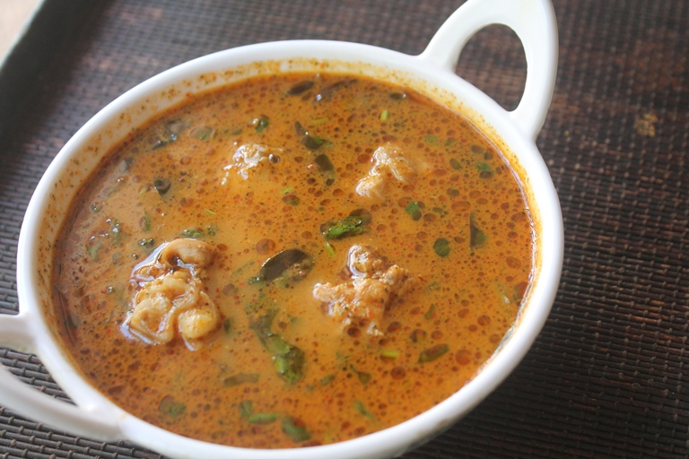

Chicken Kolambu (South Indian Style)
Prep Time: 25 minutes
Cook Time: 40 minutes
Servings: 4
Ingredients:
- 500g Chicken (bone-in preferred)
- 2 Onions (sliced)
- 2 Tomatoes (chopped)
- 2 tbsp Ginger-garlic paste
- 2 tbsp Oil (preferably gingelly oil)
- 1 tsp Mustard seeds
- Few Curry leaves
- 1 tsp Red chili powder
- 1 tsp Coriander powder
- ½ tsp Turmeric powder
- ½ tsp Garam masala
- Salt – to taste
- 1 cup Water (adjust as needed)
- Chopped coriander for garnish
To Grind (Masala Paste):
- ¼ cup Grated coconut
- 1 tsp Fennel seeds (sombu)
- 5 Cashews or 1 tsp Poppy seeds (optional)
- A little water
Instructions:
- Grind the coconut, fennel, and cashew into a smooth paste. Set aside.
- Heat oil in a kadai. Add mustard seeds and let them splutter.
- Add curry leaves and sliced onions. Sauté till golden brown.
- Add ginger-garlic paste. Fry till raw smell goes away.
- Add chopped tomatoes. Cook till they turn soft.
- Add turmeric, chili, coriander, and garam masala powders. Mix well.
- Add chicken pieces and salt. Sauté for 5–6 minutes till chicken changes color.
- Add water, cover, and cook for 20 minutes or till chicken is tender.
- Add the ground masala paste and simmer for another 5–10 minutes.
- Garnish with coriander and serve hot with rice, dosa, or idli.